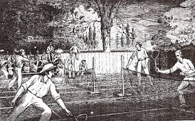
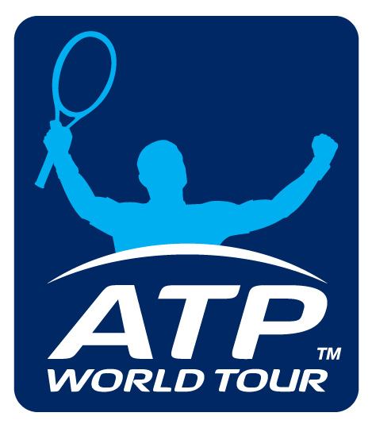

Istorie
Unii istorici considera ca tenisul este originar din Franta, de pe la jumatatea sec. al XII-lea. Pe atunci insa, formula in care se juca tenis excludea racheta, mingea era lovita cu palma. Abia dupa un timp a fost introdusa in joc si o manusa din piele.
Alti istorici considera ca tenisul a aparut acum aproximativ 1000 de ani, creat fiind de calugari europeni, si jucat, ca si moment distractiv, in timpul ceremoniilor religioase.
Abia prin sec. al XVI-lea a aparut racheta iar jocul a primit numele de “tenis”.

Era cunoscut insa doar in Franta si Anglia si se juca doar in sala. Mai apoi a fost adoptat de familia regala (Henry al VIII al Angliei era unul dintre fanii acestui sport) care l-a denumit “real tennis” (tenis adevarat).
Dupa inca doua secole, Harry Gem si Augurio Perera au dezvoltat un joc ce combina elementele tenisului si basketball-ului, numit pelota, care se juca numai in Birmingham, Marea Britanie. In 1872, doi medici locali au infiintat primul club de tenis din lume, numit Leamington Spa.
In decembrie 1873, Walter Clopton Wingfield a inventat si patentat un sport similar, denumit de el sphairistike, cuvant ce provine din greaca antica, insemnand “indemanarea de a te juca cu mingea”. Acest nume a fost foarte curand redus la simplul “sticky”- spre amuzamentul invitatilor sai la domeniul din Nantclwyd, in Llanelidan, Wales. Jocul sau se baza mai curand pe o dezvoltare spre jocul de exterior (afara) a tenisului. Conform unor istorici, terminologia tenisului modern provine din aceasta perioada, cand Wingfiled a imprumutat atat numele cat si vocabularul francez de la vechiul joc.
Primul campionat de tenis s-a jucat la Wimbledon in anul 1877 si s-a incheiat cu discutii furtunoase in legatura cu regulamentul de joc, cand s-a pus si pentru prima data problema unor reguli scrise si recunoscute international.
In America anului 1874 Mary Ewing Outerbridge, un tanar socialist, dupa o intalnire in insulele Bermude cu Wingfield, a infiintat un teren de tenis in Clubul de Cricket, din Staten Island, New York, unde s-a si jucat primul turneu american, national, organizat in anul 1880. Un englez pe nume O.E. Wodhouse a fost castigatorul turneului de simplu, iar la dublu invingatorii au fost localnici. La acel moment fiecare club avea propriile reguli – spre exemplu, mingea utilizata in Boston era ceva mai mare decat cea de la New York.
In 21 mai 1881, Asociatia Nationala de Tenis a Statelor Unite a formalizat regulamentul jocului de tenis si a organizat primele competitii reale.
Campionatul National al Statelor Unite de simplu masculin, cunoscut acum sub numele de U.S. Open, s-a organizat pentru prima data in 1881, in Newport, Rhode Island. Similarul, pentru simplu feminin, a fost organizat abia dupa 6 ani, in 1887.
Tenisul devenise foarte popular si in Franta, care a infiintat French Open, in anul 1891. Astfel ca, pana la sfarsitul secolului, sportivii deja beneficiau de organizarea a 3 dintre cele 4 competitii mari, existente si in prezent. Open-ul Australian dateaza din anul 1905. Aceste patru evenimente, cele mai importante si in tenisul modern, sunt numite Grand Slams (un termen impumutat initial din bridge apoi din baschet).
Primul regulament complet a fost redactat de Federatia Internationala de Tenis in anul 1924, care a ramas aproape neschimbat timp de 80 de ani, cu exceptia introducerii sistemului tiebreak definit de James Van Allen. Incepand din acelasi an si timp de 60 de ani, tenisul s-a retras din Olimpiada. Prin eforturile Presedintelului Federatiei, Philippe Chartier, ale Secretarului General David Gray si Vice Presedintelui Plablo Llores, tenisul a fost readus in scena, la Olimpiada din anul 1984, ca sport demonstrativ, si apoi cu drepturi depline la Seoul in 1988.
O alta competitie importanta in tenis este Cupa Davis, “inventata” in anul 1900, in care concureaza echipele nationale de barbati ale tarilor participante. Intr-o confruntare sunt 4 meciuri de simplu si unul de dublu. Concursul similar, dedicat femeilor, numit Fed Cup, a fost organizat pentru prima data in anul 1963, sarbatorind cea de-a 50-a aniversare a Federatiei Internationale de Tenis.
Anul 1926 a ramas in istorie ca fiind inceputul turneelor profesioniste de tenis. In acel an americanii si francezii au jucat meciuri demonstrative in fata unei auditente care a platit pentru vizionare. Cei mai notabili sportivi din acel moment sunt americanul Vinnie Richards si frantuzoaica Suzzane Lenglen. Din acel an, un jucator ce devine recunoscut, profesionist, nu va mai avea voie sa joace in turneele destinate amatorilor.
In anul 1954, Van Alen infiinteaza in Newprot, Rhode Insland, International Tennis Hall of Fame – un muzeu non-profit. Cladirea contine o colectie mare de obiecte legate de tenis si o incapere dedicata glorificarii unor figuri proeminete si jucatori de tenis din toata lumea. In fiecare an o ceremonie speciala ii reamineste pe cei care sunt gazduiti in Hall of Fame (sala gloriei / faimei).
In anul 1968, din cauza unor zvonuri denigratoare legate de incasari “pe sub tejgea” ale unor jucatori amatori, incepe “Open Era” in care toti jucatorii, atat amatorii cat si profesionistii, pot participa la orice turneu. Tot de atunci, castigurile din tenis vor fi suficiente pentru ca cei mai buni sa se poata chiar intretine din tenis. Odata cu aceasta “era a dechiderii”, infiintarea circuitului profesionist de tenis si a veniturilor incasate din vanzarea drepturilor de difuzare catre televiziuni, popularitatea tenisului creste rapid, devenind un sport international.
In circuitul profesionist de tenis exista si acum cele 4 turnee, cele mai importante, numite Grand Slam: Australian Open, Roland Garros, Wimbledon si US Open.
Asociatia Tenisului Profesionist, ATP, a fost infiintata in Septembrie 1972 de Donald Dell, Jack Kramer si Cliff Drysdale, in scopul protejarii jucatorilor profesionisti de tenis. Drysale devine primul Presedinte al organizatiei. Incepand din anul 1990, asociatia incepe sa se implice direct in organizarea turneelor de tenis masculin, iar competitiile primesc un nou nume, “circuitul ATP”, iar din 2001, ramane simplu “ATP”. In anul 2009 denumirea se schimba din nou, “ATP World Tour”.
Birourile executive al ATP sunt localizate astfel:
- Birou central, Londra. UK
- ATP America, la Ponte Vedra Beach, USA
- ATP Europa, la Monaco
- ATP International, care acopera Africa, Asia si Australia, la Sidney, Australia